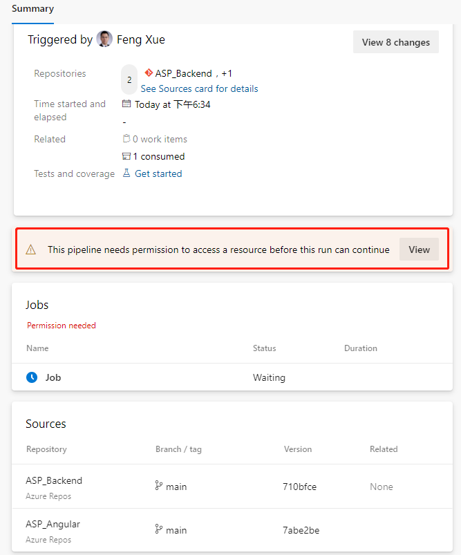
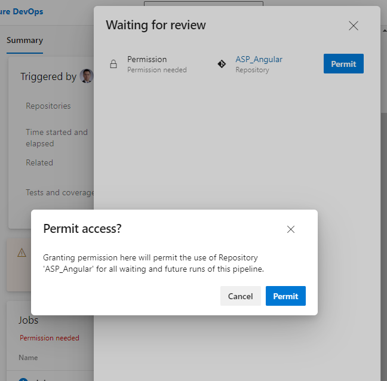
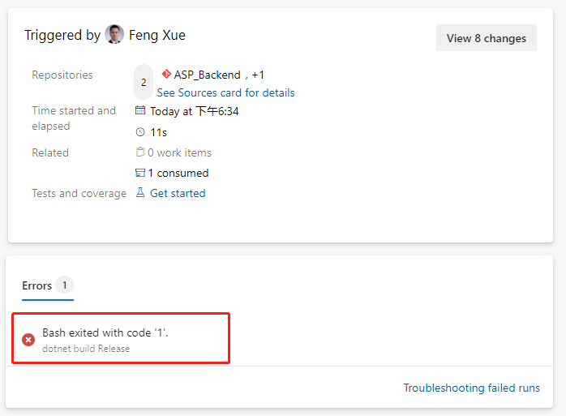
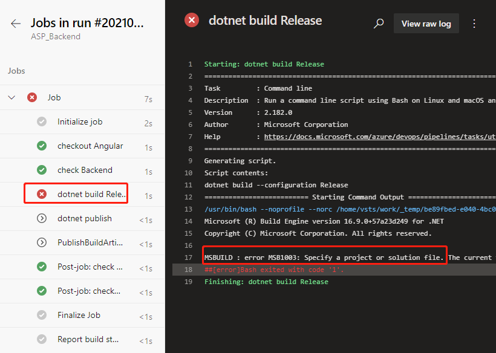
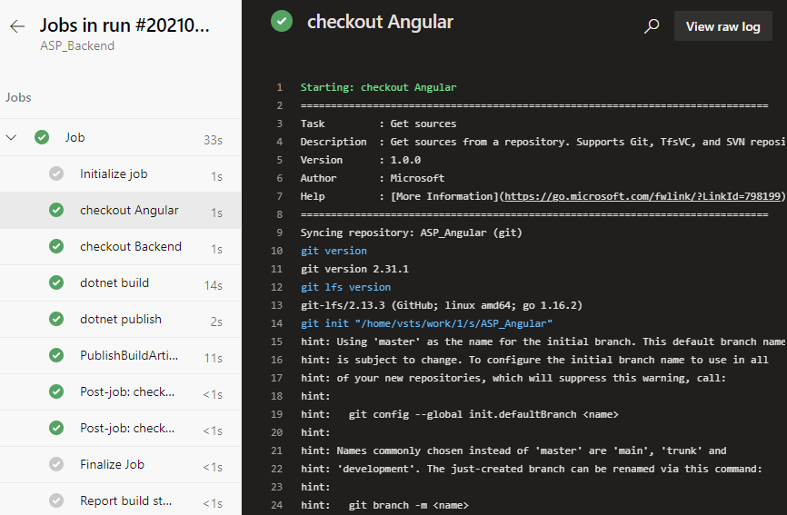

引入第2个源码库
我们回到YAML文件编辑界面，在文件开头的 trigger: - master 这一行下面加上如下这段：
resources:
repositories:
- repository: Angular
name: <YourProjectName>/ASP_Angular
type: git
ref: main
这里 repository: Angular 是给这个引用的源码库起一个代号，后面可以简单地调用它。
name: <YourProjectName>/ASP_Angular 则是"项目名/库名"的格式。
ref: main 声明使用的是main分支。
然后在 steps: 后面加上
- checkout: Angular
displayName: 'checkout Angular'
- checkout: self
displayName: 'checkout Backend'
任务意思是签出前端库。因为引入了第2个源码库，所以当前库自身也要加一个任务 - checkout: self 来签出。保存后再执行时，因为在当前流水线要调用其它源码库，首次运行会弹出提示需要权限。

点击 View 按钮。

在弹出的浮层再点"Permit"按钮即可。这个权限许可只在首次添加任务时需要操作，以后就不会再弹出了。
这次执行大概率会失败。

我们点击这个错误消息，会直接跳转到具体的报错日志那里。

之前可以正常运行的 ASP 构建任务，现在不灵了。我们把之前由向导生成的构建的任务。
- script: dotnet build --configuration $(buildConfiguration)
displayName: 'dotnet build $(buildConfiguration)'
替换成下面这样的。
- task: DotNetCoreCLI@2
displayName: 'dotnet build'
inputs:
command: 'build'
projects: '**/*.csproj'
arguments: '--configuration $(BuildConfiguration)'
displayName: 'dotnet build'
inputs:
command: 'build'
projects: '**/*.csproj'
arguments: '--configuration $(BuildConfiguration)'
再保存运行就正常了。我们在作业运行详情页点击绿色对勾的Job链接，可以看到日志中签出前端库的后端库的任务都完成了，还可以点击每个任务名称，再查看详细的日志。

注意这里前端项目签出的日志中有一行
git init \"/home/vsts/work/1/s/ASP_Angular\"
这表示在流水线执行的容器里前端代码签出时保存在本地的路径，我们记下这个路径，后续添加构建任务时需要用到。